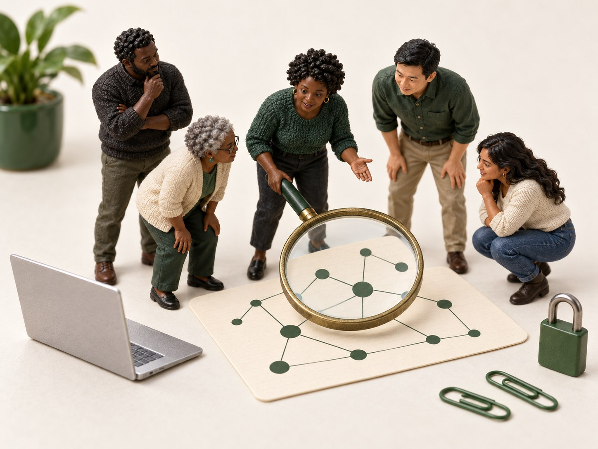

Services
Make complex systems
easier to understand.
Our service focus connects energy education, technology literacy and workforce learning. We start with clear questions, practical knowledge and the people who will use it.
Energy
Energy literacy
& project research.
Plain-language learning about energy systems, renewable technologies and the relationship between materials and energy.
Project research helps surface the questions that matter before a next step: local needs, partner roles, safe practice and what still needs to be verified.
The Global Rangers project in Liberia brings these themes together through recycling and energy-literacy planning.
Explore Global Rangers →

Security
Security & emerging
technology literacy.
Learning and discussion around AI, connected technology and the information people rely on.
Our focus is understanding risks, questioning information and encouraging responsible use as digital systems reach further into daily life.
Workforce learning
Build knowledge.
Practice the next step.
Workshop and learning-material development that turns complex ideas into clear explanations, discussion and practical exercises.
Energy and technology topics connect learning to the systems people may work with, while keeping safety and local context in view.

Work with us
Start with the question
you want to answer.
We are developing our service offerings. Our contact channel will be available soon for conversations about scope, audience and fit.
Contact